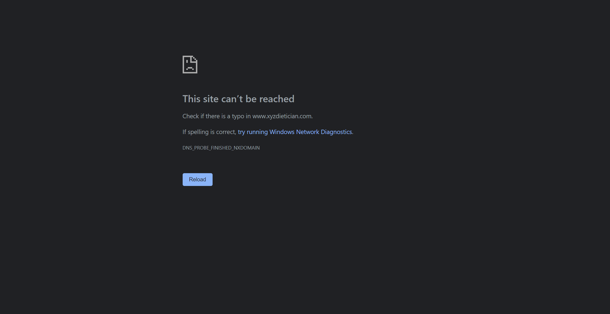

Started
Jun 16, 2022 10:57:13 AM
Ended
Jun 16, 2022 10:58:28 AM
Features Passed
0
Features Failed
1
Features
Scenarios
Steps
Timeline
System/Environment
| Name | Value |
|---|---|
| build | 1.1 |
| user | ashwini |
| AppName | Dietician Website |
| os | Mac |
-
Signin Page
10:57:15 AM / 00:01:13:181 Fail
Signin Page
06.16.2022 10:57:15 AM 06.16.2022 10:58:28 AM 00:01:13:181 · #test-id=1FailValidating the Sign In with different credentialsFailValidating the Sign In with different credentialsGiven User is on Sign In PageWhen User enters "null","null" and "Please fill fields"Then User should be logged in successfullybase.DriverFactory.tearDown(io.cucumber.java.Scenario)Validating_the_Sign_In_with_different_credentialsFailValidating the Sign In with different credentialsGiven User is on Sign In PageWhen User enters "Adri222","bub9999" and "Invalid both fields"Then User should be logged in successfullybase.DriverFactory.tearDown(io.cucumber.java.Scenario)Validating_the_Sign_In_with_different_credentialsFailValidating the Sign In with different credentialsGiven User is on Sign In PageWhen User enters "Adri111","bubbly" and "only alphabets allowed"Then User should be logged in successfullybase.DriverFactory.tearDown(io.cucumber.java.Scenario)Validating_the_Sign_In_with_different_credentialsFailValidating the Sign In with different credentialsGiven User is on Sign In PageWhen User enters "Adriti","bub123" and "Only alphabets allowed"Then User should be logged in successfullybase.DriverFactory.tearDown(io.cucumber.java.Scenario)Validating_the_Sign_In_with_different_credentials FailValidating the Sign In with different credentialsGiven User is on Sign In PageWhen User enters "Adriti","bubbly" and "Sign In successful"Then User should be logged in successfullybase.DriverFactory.tearDown(io.cucumber.java.Scenario)Validating_the_Sign_In_with_different_credentials
FailValidating the Sign In with different credentialsGiven User is on Sign In PageWhen User enters "Adriti","bubbly" and "Sign In successful"Then User should be logged in successfullybase.DriverFactory.tearDown(io.cucumber.java.Scenario)Validating_the_Sign_In_with_different_credentials FailValidating Sign In with Not member Yet linkGiven User is on Sign In PageWhen User clicks on Not member YetThen User is directed to Register PageStep skippedbase.DriverFactory.tearDown(io.cucumber.java.Scenario)Validating_Sign_In_with_Not_member_Yet_link
FailValidating Sign In with Not member Yet linkGiven User is on Sign In PageWhen User clicks on Not member YetThen User is directed to Register PageStep skippedbase.DriverFactory.tearDown(io.cucumber.java.Scenario)Validating_Sign_In_with_Not_member_Yet_link FailValidating the Sign In button for the option "Sign In form" on Sign In Page.Given User is on the Dietician websiteWhen User clicks on Sign In link from the Home PageStep skippedThen User should see a button with text Sign In form in the Sign InStep skippedbase.DriverFactory.tearDown(io.cucumber.java.Scenario)Validating_the_Sign_In_button_for_the_option_"Sign_In_form"_on__Sign_In_Page.
FailValidating the Sign In button for the option "Sign In form" on Sign In Page.Given User is on the Dietician websiteWhen User clicks on Sign In link from the Home PageStep skippedThen User should see a button with text Sign In form in the Sign InStep skippedbase.DriverFactory.tearDown(io.cucumber.java.Scenario)Validating_the_Sign_In_button_for_the_option_"Sign_In_form"_on__Sign_In_Page. FailValidating the title of "Sign In"Given User is on the Dietician websiteWhen User clicks on icon symbol on Sign In PageStep skippedThen User should see title of page as Sign InStep skippedbase.DriverFactory.tearDown(io.cucumber.java.Scenario)Validating_the_title_of_"Sign_In"
FailValidating the title of "Sign In"Given User is on the Dietician websiteWhen User clicks on icon symbol on Sign In PageStep skippedThen User should see title of page as Sign InStep skippedbase.DriverFactory.tearDown(io.cucumber.java.Scenario)Validating_the_title_of_"Sign_In" FailValidating the Sign In form headingGiven User is on the Dietician websiteWhen User clicks on Sign In link from the Home PageStep skippedThen User should see a form with heading Sign In formStep skippedbase.DriverFactory.tearDown(io.cucumber.java.Scenario)Validating_the_Sign_In_form_heading
FailValidating the Sign In form headingGiven User is on the Dietician websiteWhen User clicks on Sign In link from the Home PageStep skippedThen User should see a form with heading Sign In formStep skippedbase.DriverFactory.tearDown(io.cucumber.java.Scenario)Validating_the_Sign_In_form_heading FailValidating Sign In with Forgot Password linkGiven User is on Sign In PageWhen User clicks on Forgot Password buttonThen User is directed to Reset password linkStep skippedbase.DriverFactory.tearDown(io.cucumber.java.Scenario)Validating_Sign_In_with_Forgot_Password_link
FailValidating Sign In with Forgot Password linkGiven User is on Sign In PageWhen User clicks on Forgot Password buttonThen User is directed to Reset password linkStep skippedbase.DriverFactory.tearDown(io.cucumber.java.Scenario)Validating_Sign_In_with_Forgot_Password_link FailValidating with different login credentialsFailValidating with different login credentialsGiven User is on Sign In PageWhen User enters "m_sunita20@.co","bub9999" and then "Invalid both fields"Then User should be able to log inbase.DriverFactory.tearDown(io.cucumber.java.Scenario)FailValidating with different login credentialsGiven User is on Sign In PageWhen User enters "m_sunita20@yahoo.com","bubbly" and then "Sign In successful"Then User should be able to log inbase.DriverFactory.tearDown(io.cucumber.java.Scenario)FailValidating with different login credentialsGiven User is on Sign In PageWhen User enters "m_sunita20@.com","bubbly" and then "Invalid entry"Then User should be able to log inbase.DriverFactory.tearDown(io.cucumber.java.Scenario)FailValidating with different login credentialsGiven User is on Sign In PageWhen User enters "m_sunita20@yahoo.com","bub888" and then "Only alphabets allowed"Then User should be able to log inbase.DriverFactory.tearDown(io.cucumber.java.Scenario)FailValidating with different login credentialsGiven User is on Sign In PageWhen User enters "null","null" and then "Please fill fields"Then User should be able to log inbase.DriverFactory.tearDown(io.cucumber.java.Scenario)FailValidating login button on Login with your email formGiven User is on the Dietician websiteWhen User is on the Sign in PageStep skippedThen User should see a button with text Log In in Sign In formStep skippedbase.DriverFactory.tearDown(io.cucumber.java.Scenario)FailValidating Sign Up Here linkGiven User is on Sign In PageWhen User clicks Sign Up Here linkThen User is directed to Register pageStep skippedbase.DriverFactory.tearDown(io.cucumber.java.Scenario)FailValidating the heading Login with your email in Sign In pageGiven User is on the Dietician websiteWhen User is on the Sign in PageStep skippedThen User should see a form with heading Login with your emailStep skippedbase.DriverFactory.tearDown(io.cucumber.java.Scenario)FailValidating Sign In Process with GoogleGiven User is on Sign In PageWhen User clicks Google button in the Sign In with Email formStep undefinedThen User is directed to Gogle login pageStep skippedFailValidating Log In Process with FacebookGiven User is on Sign In PageWhen User clicks Facebook button in the Sign In with Email formStep undefinedThen User is directed to Facbook sign in pageStep skipped
FailValidating with different login credentialsFailValidating with different login credentialsGiven User is on Sign In PageWhen User enters "m_sunita20@.co","bub9999" and then "Invalid both fields"Then User should be able to log inbase.DriverFactory.tearDown(io.cucumber.java.Scenario)FailValidating with different login credentialsGiven User is on Sign In PageWhen User enters "m_sunita20@yahoo.com","bubbly" and then "Sign In successful"Then User should be able to log inbase.DriverFactory.tearDown(io.cucumber.java.Scenario)FailValidating with different login credentialsGiven User is on Sign In PageWhen User enters "m_sunita20@.com","bubbly" and then "Invalid entry"Then User should be able to log inbase.DriverFactory.tearDown(io.cucumber.java.Scenario)FailValidating with different login credentialsGiven User is on Sign In PageWhen User enters "m_sunita20@yahoo.com","bub888" and then "Only alphabets allowed"Then User should be able to log inbase.DriverFactory.tearDown(io.cucumber.java.Scenario)FailValidating with different login credentialsGiven User is on Sign In PageWhen User enters "null","null" and then "Please fill fields"Then User should be able to log inbase.DriverFactory.tearDown(io.cucumber.java.Scenario)FailValidating login button on Login with your email formGiven User is on the Dietician websiteWhen User is on the Sign in PageStep skippedThen User should see a button with text Log In in Sign In formStep skippedbase.DriverFactory.tearDown(io.cucumber.java.Scenario)FailValidating Sign Up Here linkGiven User is on Sign In PageWhen User clicks Sign Up Here linkThen User is directed to Register pageStep skippedbase.DriverFactory.tearDown(io.cucumber.java.Scenario)FailValidating the heading Login with your email in Sign In pageGiven User is on the Dietician websiteWhen User is on the Sign in PageStep skippedThen User should see a form with heading Login with your emailStep skippedbase.DriverFactory.tearDown(io.cucumber.java.Scenario)FailValidating Sign In Process with GoogleGiven User is on Sign In PageWhen User clicks Google button in the Sign In with Email formStep undefinedThen User is directed to Gogle login pageStep skippedFailValidating Log In Process with FacebookGiven User is on Sign In PageWhen User clicks Facebook button in the Sign In with Email formStep undefinedThen User is directed to Facbook sign in pageStep skipped
-
java.lang.AssertionError
10 tests
java.lang.AssertionError
10 failedStatus Timestamp TestName Fail 10:57:21 AM Then User should be logged in successfully Signin Page.Validating the Sign In with different credentials.Then User should be logged in successfullyFail 10:57:21 AM Then User should be logged in successfully Signin Page.Validating the Sign In with different credentials.Then User should be logged in successfullyFail 10:57:21 AM Then User should be logged in successfully Signin Page.Validating the Sign In with different credentials.Then User should be logged in successfullyFail 10:57:21 AM Then User should be logged in successfully Signin Page.Validating the Sign In with different credentials.Then User should be logged in successfullyFail 10:57:21 AM Then User should be logged in successfully Signin Page.Validating the Sign In with different credentials.Then User should be logged in successfullyFail 10:58:28 AM Then User should be able to log in Signin Page.Validating with different login credentials.Then User should be able to log inFail 10:58:28 AM Then User should be able to log in Signin Page.Validating with different login credentials.Then User should be able to log inFail 10:58:28 AM Then User should be able to log in Signin Page.Validating with different login credentials.Then User should be able to log inFail 10:58:28 AM Then User should be able to log in Signin Page.Validating with different login credentials.Then User should be able to log inFail 10:58:28 AM Then User should be able to log in Signin Page.Validating with different login credentials.Then User should be able to log in -
org.openqa.selenium.NoSuchSessionException
8 tests
org.openqa.selenium.NoSuchSessionException
8 failedStatus Timestamp TestName Fail 10:58:28 AM base.DriverFactory.tearDown(io.cucumber.java.Scenario) Signin Page.Validating the heading Login with your email in Sign In page.base.DriverFactory.tearDown(io.cucumber.java.Scenario)Fail 10:58:28 AM base.DriverFactory.tearDown(io.cucumber.java.Scenario) Signin Page.Validating login button on Login with your email form.base.DriverFactory.tearDown(io.cucumber.java.Scenario)Fail 10:58:28 AM base.DriverFactory.tearDown(io.cucumber.java.Scenario) Signin Page.Validating with different login credentials.base.DriverFactory.tearDown(io.cucumber.java.Scenario)Fail 10:58:28 AM When User clicks Sign Up Here link Signin Page.Validating Sign Up Here link.When User clicks Sign Up Here linkFail 10:58:28 AM base.DriverFactory.tearDown(io.cucumber.java.Scenario) Signin Page.Validating with different login credentials.base.DriverFactory.tearDown(io.cucumber.java.Scenario)Fail 10:58:28 AM base.DriverFactory.tearDown(io.cucumber.java.Scenario) Signin Page.Validating with different login credentials.base.DriverFactory.tearDown(io.cucumber.java.Scenario)Fail 10:58:28 AM base.DriverFactory.tearDown(io.cucumber.java.Scenario) Signin Page.Validating with different login credentials.base.DriverFactory.tearDown(io.cucumber.java.Scenario)Fail 10:58:28 AM base.DriverFactory.tearDown(io.cucumber.java.Scenario) Signin Page.Validating Sign Up Here link.base.DriverFactory.tearDown(io.cucumber.java.Scenario) -
org.openqa.selenium.WebDriverException
6 tests
org.openqa.selenium.WebDriverException
6 failedStatus Timestamp TestName Fail 10:57:21 AM Given User is on the Dietician website Signin Page.Validating the Sign In button for the option "Sign In form" on Sign In Page..Given User is on the Dietician websiteFail 10:57:21 AM Given User is on the Dietician website Signin Page.Validating the title of "Sign In".Given User is on the Dietician websiteFail 10:57:21 AM Given User is on the Dietician website Signin Page.Validating the Sign In form heading.Given User is on the Dietician websiteFail 10:58:27 AM Given User is on the Dietician website Signin Page.Validating login button on Login with your email form.Given User is on the Dietician websiteFail 10:58:27 AM Given User is on the Dietician website Signin Page.Validating the heading Login with your email in Sign In page.Given User is on the Dietician websiteFail 10:58:28 AM base.DriverFactory.tearDown(io.cucumber.java.Scenario) Signin Page.Validating with different login credentials.base.DriverFactory.tearDown(io.cucumber.java.Scenario) -
org.openqa.selenium.NoSuchElementException
2 tests
org.openqa.selenium.NoSuchElementException
2 failedStatus Timestamp TestName Fail 10:57:21 AM When User clicks on Not member Yet Signin Page.Validating Sign In with Not member Yet link.When User clicks on Not member YetFail 10:57:21 AM When User clicks on Forgot Password button Signin Page.Validating Sign In with Forgot Password link.When User clicks on Forgot Password button